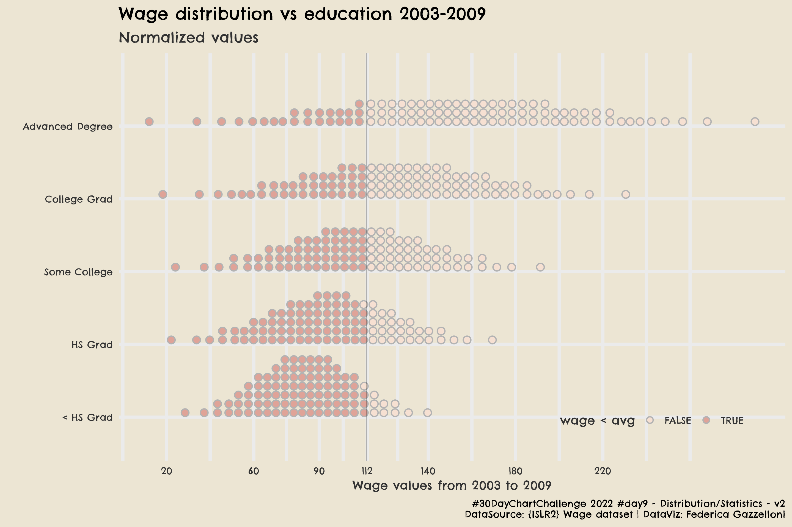

Statistics
By Federica Gazzelloni
April 9, 2022
Overview
This is one of my favourite visualizations. It looks like very simple, and straight forward with the use of the ggdist::stat_dots function to make dotted ditributions of the wages by highest educational status reached.

The Tidyverse libraries needed for the data manipulation:
library(tidyverse)
The data set is the Wage dataset from the {ISLR2} package. This package contains a variety of datasets used for statistical analysis in An Introduction to Statistical Learning book.
library(ISLR2)
data(Wage)
wage_h <- Wage%>%group_by(education)%>%summarize(avg_wage=mean(wage))
kableExtra::kable(wage_h,row.names = F)
| education | avg_wage |
|---|---|
| 1. < HS Grad | 84.10441 |
| 2. HS Grad | 95.78335 |
| 3. Some College | 107.75557 |
| 4. College Grad | 124.42791 |
| 5. Advanced Degree | 150.91778 |
Data Wrangling
A bit of data wrangling to group by education and calculate the mean value and the standard deviation of the wage.
Wage1 <- Wage %>%
mutate(education=gsub("\\d. ","",education)) %>% #count(year)
group_by(education)%>%
mutate(mean=mean(wage),
sd=sd(wage)) %>%
ungroup() %>% # pull(mean)%>%summary
select(education,mean,sd) %>%
distinct()
Set some extrafonts:
library(extrafont)
# loadfonts()
For this visualization I used: family = “Chelsea Market”
And finally, to make the plot, use:
- ggdist::stat_dots to make the dots ditribution
- distributional::dist_normal to normalize the data
library(ggdist)
library(distributional)
Wage1 %>%
ggplot(aes(y=fct_reorder(education,mean),
xdist = dist_normal(mean, sd),
layout = "weave",
fill = stat(x < 111.70))) +
stat_dots(position = "dodge", color = "grey70")+
geom_vline(xintercept = 111.70, alpha = 0.25) +
scale_x_continuous(breaks = c(20,60,90,112,140,180,220)) +
tvthemes::scale_fill_hilda()+
# add a title / subtitle and a caption ------
labs(x="Wage values from 2003 to 2009",
y="",color="Race",fill="wage < avg",
title="Wage distribution vs education 2003-2009",
subtitle="Normalized values",
caption="#30DayChartChallenge 2022 #day9 - Distribution/Statistics - v2\nDataSource: {ISLR2} Wage dataset | DataViz: Federica Gazzelloni") +
# set a customized theme -------
tvthemes::theme_avatar() +
theme(text = element_text(family="Chelsea Market"),
legend.background = element_blank(),
legend.box.background = element_blank(),
legend.key = element_blank(),
legend.key.width = unit(0.5,units="cm"),
legend.direction = "horizontal",
legend.position = c(0.8,0.1))
If you’d like to save it as .png you can do it with ggsave()
ggsave("day9_statistics_v2.png",
dpi=320,
width = 9,
height = 6)
Resources:
- Posted on:
- April 9, 2022
- Length:
- 2 minute read, 314 words
- See Also: